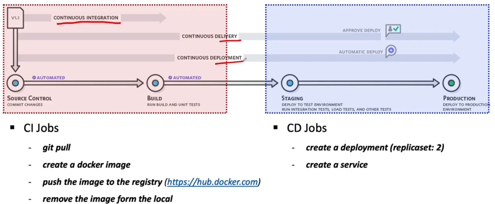
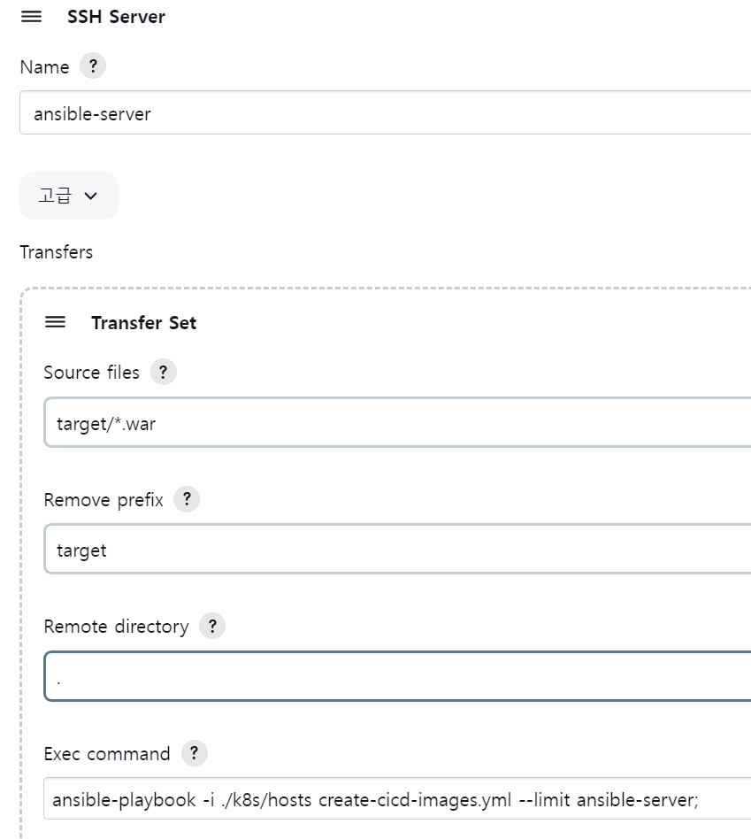
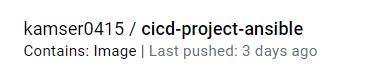

ci-cd-section-04-ch-04-ci-cd-process

- CI
지속적인 통합
- CD
두 가지 의미를 포함하고 있으며, 보통 배포의 의미로 사용
- CI/CD 시나리오 CI 시나리오
git pull: 최신 코드를 가져오고
build를 합니다.build와Dockerfile등으로 컨테이너 이미지를 만듭니다.로컬에 생성된 이미지를
docker hub에 저장합니다. 이때 private이나 public 상관없이 다른 클라우드에서 업로드된 이미지를pull할 수 있으면 됩니다.로컬에 생성된 이미지를 삭제합니다.
- CD 시나리오
업로드된 최신
Docker image를pull합니다 받은 파일을 가지고 Kubernates에서Pods를 실행하고 서비스를 실행하고 사용자가 사용할 수 있는 상태로 만드는 과정입니다.
작업 순서
1. 최신 코드 이미지화하기
create-cicd-devops-images.yml
git에서 다운받은 최신 코드로 빌드된 결과를 이미지로 만드는 과정이 필요합니다.
원격 저장소에 저장합니다.
원격 저장소에 업로드된 이미지는 로컬에서 삭제합니다.
사용하는 Dockerfile은 컨테이너에서 사용하는 환경을 작성핣니다(톰캣 버전등)
Ansible 서버에서는 이미지를 저장하는 playbook을 실행합니다.
kubernates서버에는 등록된 이미지를 가지고 배포하는 기능만 추가합니다.
CI 작업 정리

git에 최신 코드를 작성
Jenkins가 poll SCM으로 트리거가 동작하여 특정 JOB이 실행됨
해당 JOB은 최신 코드를 빌드하고 전달받은 패키지파일과 Dockerfile을 가지고 이미지를 생성함
이미지를 원격 이미지 저장소에 push하고 로컽 이미지는 삭제함
2. CD 프로젝트 실행
CI 작업이 성공하면 동작하도록 설정합니다.
문제 발생( 이미지 삭제시 발생하는 오류 발생해도 정상 동작함)

현재 3일전에 업로드 된게 최신 버전입니다.